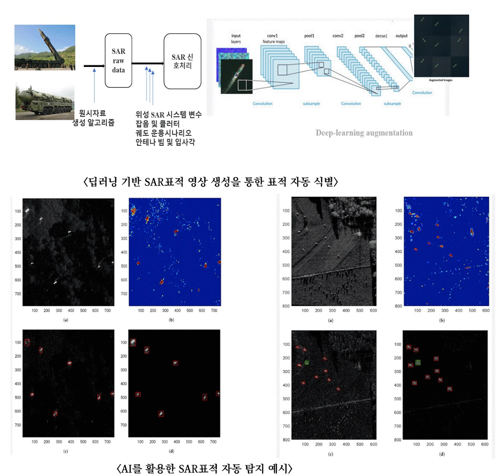
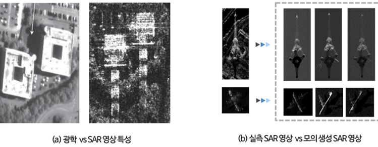
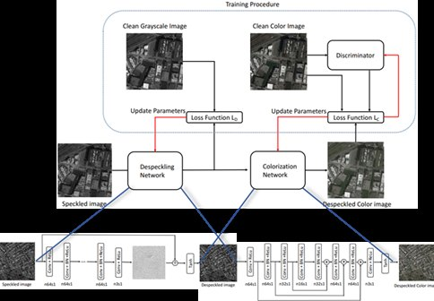
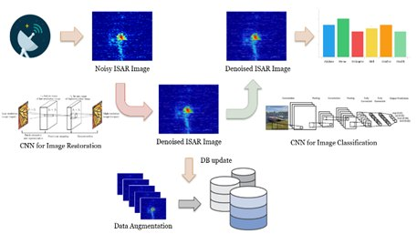
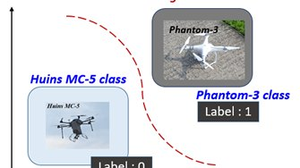

연구 분야
드론 탐지 및 레이다 기계학습

개요
인공지능 레이다 영상 분석 분야는 SAR 및 ISAR 레이다 영상에 AI를 적용하는 연구 영역이다. SAR 영상의 장점인 기상 악천후 속에서도 고해상도의 영상을 만들어내는 점과 AI의 장점인 표적의 특징을 추출하여 표적 자동 식별(ATR)을 실행하는 점을 이용하여 지상 차량 또는 미사일 발사대를 실시간으로 탐지한다. 인공지능 SAR 영상처리 학습에 적용 가능한 모의 SAR 영상과 가상 SAR 영상을 생성하고 실제 SAR 영상과의 유사도를 검증한다. 또한 ISAR 영상을 이용하여 소형 표적(드론)을 분류한다.
세부 연구
AI를 통한 지상 차량 또는 미사일 발사대 실시간 탐지
최근 주변국들의 지속되는 핵실험과 미사일의 발사로 인해 사전에 대비하고 대처해야 할 필요성이 제기된다. SAR 영상의 장점인 기상 악천후 속에서도 고해상도의 영상을 만들어내는 점과, AI의 장점인 표적의 특징을 추출하여 표적 자동 식별(ATR)을 실행하는 점을 이용해 미사일 발사대와 군용차량의 움직임을 추적하여 주변국들을 모니터링할 수 있도록 한다.
모의 SAR 영상 생성
실측 SAR 영상과 유사한 모의 SAR 영상 생성을 구현한다. 인공지능 SAR 영상처리 학습에 적용 가능한 표적 SAR 영상 생성 및 검증 연구를 수행한다.
AI 가상 SAR 영상 생성 및 검증
딥러닝 기반으로 SAR 위성 영상을 생성한다. 가상 SAR 영상과 실제 SAR 영상 간의 유사도 분석 기술을 연구한다.
AI 기반 레이다 영상 분류
ISAR 영상을 이용하여 소형 표적(드론)을 분류한다.
관련 과제
- 위성 SAR 영상을 통한 표적 관측 및 영역 식별을 위한 AI 알고리즘 활용 (2024)
- 위성 SAR 영상에서의 AI 기반 선박 탐지 및 수질 특성 관측을 위한 데이터 분석 알고리즘 연구 (2024)
- AI 초소형 가상 SAR 영상 검증 도구 연구 (2023–2024)
- 소형 위성 SAR 영상의 이동 표적 식별을 위한 AI 알고리즘 연구 (2023)
- 레이다 신호분석을 통한 드론탐지 및 분류기법 연구 (2017)
- 드론 탐지 및 추적을 위한 감시망 구축 연구 (2015)
관련 논문
- Enhancement of Drone ISAR Imaging Through Isolation and Suppression of Micro-Doppler Effects (2026)
- YOLO 기반의 SAR을 이용한 지상 이동 표적 탐지 기법 (2025)
- A new similarity evaluation method that reflects the characteristics of SAR images based on statistical quality measurement (2025)
- 드론 탐지 및 분류를 위한 레이다 영상 기계학습 활용 (2021)
- DTV 방송 신호를 사용한 드론 탐지 수동형 레이다의 구현 (2021)
- 고해상도 FMCW 레이더 영상 합성과 Cw 신호 분석 실험을 통한 드론의 탐지 및 식별 연구 (2018)
- Enhanced ISAR Imaging for Surveillance of Multiple Drones in Urban Areas (2018)
- ISAR 영상 기반 소형 드론 탐지 구현 (2017)
- Identification of a Flying Multi-rotor Platform by High Resolution ISAR through an Experimental Analysis (2017)
연구 사진·도식



